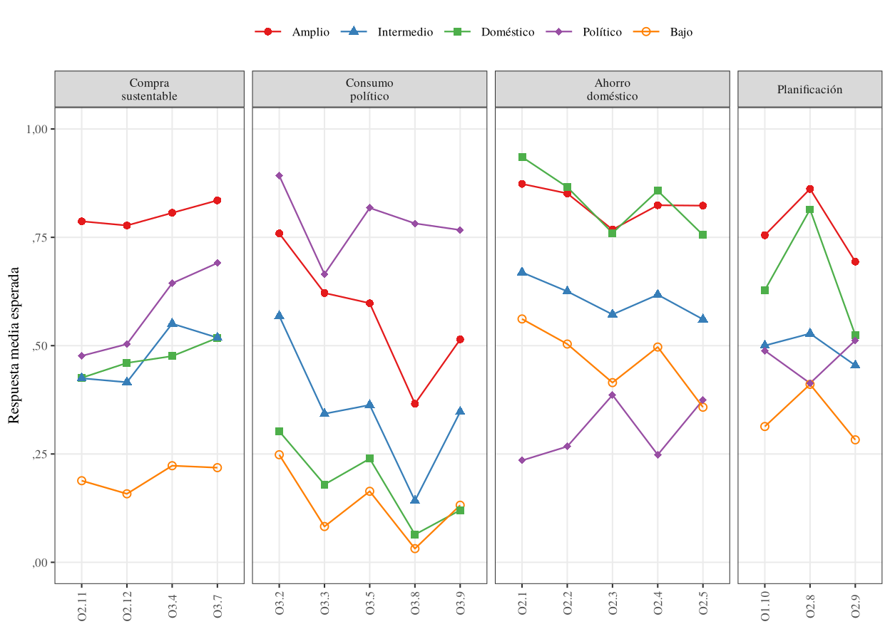
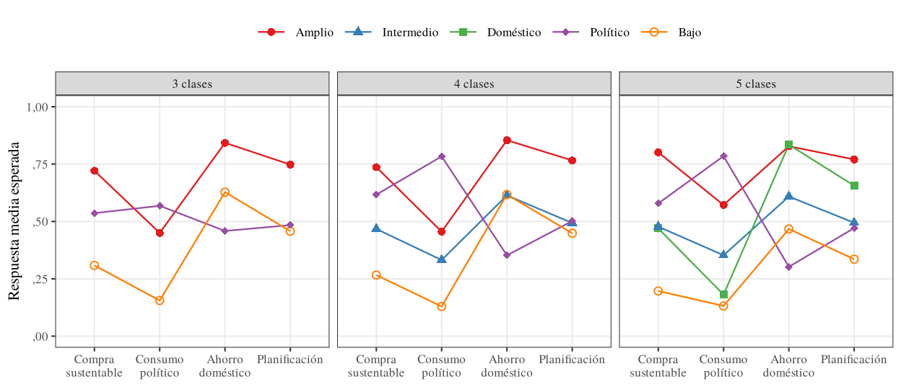
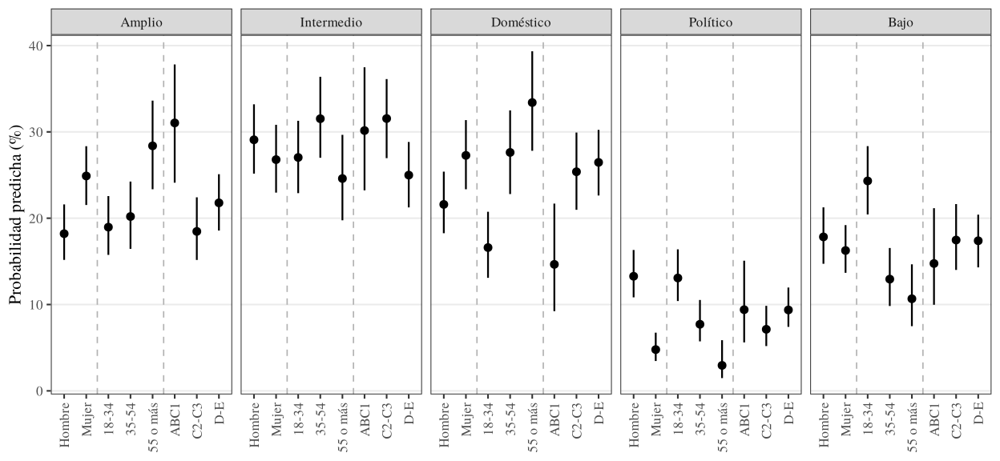

Título reducido: Consumption Practice Profiles
Número de palabras: 5.720 (sin incluir la lista de referencias)
Declaración responsable de autoría, originalidad y carácter inédito: las personas firmantes declaran que son autoras del trabajo, que este es original e inédito, que no ha sido publicado total ni parcialmente y que no se encuentra en evaluación en ninguna otra revista. Todas las personas autoras han aprobado la versión enviada.
Resumen
Antecedentes: Las tipologías de consumidores “conscientes” o “responsables” usadas en América Latina se construyen sumando prácticas declaradas, lo que supone que las personas difieren solo en cuánto hacen y no en qué hacen. Este estudio identifica perfiles de prácticas de consumo socioambientales en Chile y evalúa si forman un continuo o combinaciones cualitativamente distintas. Método: Se aplicó un análisis de clases latentes a 17 ítems de prácticas de la Encuesta Sociedad de Consumo 2023 (N = 1.623). La relación de las clases con sexo, edad y nivel socioeconómico se estimó con un enfoque de tres pasos corregido por error de clasificación. Resultados: La solución de cinco clases fue la mejor según BIC y CAIC. Tres clases formaron una gradiente (Amplio, Intermedio y Bajo), pero 33,0% de la muestra perteneció a perfiles opuestos: uno doméstico, con ahorro alto y poco consumo político, y uno político, con el ahorro más bajo. La clase política fue más probable entre jóvenes y hombres y entre quienes ven el consumo como una postura política; la doméstica, entre personas mayores y de nivel socioeconómico bajo. Conclusiones: Las tipologías sumativas confunden perfiles cualitativamente distintos.
Palabras clave: prácticas de consumo, consumo político, clases latentes, tipologías de consumidores, Chile.
Abstract
Background: Typologies of “conscious” or “responsible” consumers used in Latin America are built by summing self-reported practices, which assumes that people differ only in how much they do, not in what they do. This study identifies profiles of socio-environmental consumption practices in Chile and tests whether they form a continuum or qualitatively distinct combinations. Method: Latent class analysis was applied to 17 practice items from the 2023 Consumer Society Survey (N = 1,623). Associations with sex, age, and socioeconomic status were estimated with a bias-adjusted three-step approach. Results: The five-class solution was the best according to BIC and CAIC. Three classes formed a gradient (Broad, Intermediate, and Low), but 33.0% of the sample belonged to opposite profiles: a household profile, with high saving and little political consumption, and a political profile, with the lowest saving. The political class was more likely among young people, men, and those who see consumption as a political stance; the household class, among older and lower-status people. Conclusions: Summative typologies conflate qualitatively distinct profiles.
Keywords: consumption practices, political consumerism, latent class analysis, consumer typologies, Chile.
En Chile, el consumo ocupa un lugar central en la vida social. Desde la década de 1990, la expansión del consumo y del crédito ha sido interpretada como un mecanismo de integración social que desplazó a la participación política (Moulian, 1997), y el endeudamiento de los hogares se normalizó como un pilar del modelo socioeconómico (Marambio-Tapia, 2022). En ese contexto, las prácticas mediante las cuales las personas incorporan consideraciones ambientales o políticas a su consumo son un espacio relevante para estudiar la relación entre ciudadanía y mercado.
Estas prácticas suelen agruparse bajo las nociones de consumo consciente o responsable. Esas nociones han sido criticadas porque trasladan al consumidor individual la responsabilidad por problemas que se originan en la producción, y porque no cuestionan el proceso productivo (Barros & Costa, 2008; Yoshizato Bierwagen, 2016). En Chile se ha advertido, por ejemplo, que los llamados a acortar la ducha para cuidar el agua omiten que la industria concentra la mayor parte de su consumo (Marambio-Tapia, 2024). Por eso, en este estudio se habla de prácticas de consumo socioambientales: prácticas cotidianas de compra, uso y organización del consumo con implicancias ambientales o políticas, sin suponer que expresen una responsabilidad o una virtud individual.
La forma más extendida de clasificar a las personas según estas prácticas proviene del Instituto Akatu. Su tipología suma el número de conductas que cada persona declara realizar y, con puntos de corte, ordena a la población en indiferentes, iniciantes, comprometidos y conscientes; estos últimos rondan el 5% de la población brasileña (Instituto Akatu, 2007). La adaptación chilena de ese índice estimó que solo el 6,5% de la población podía clasificarse como “consumidora responsable” (Ariztía et al., 2010). Otros estudios chilenos clasifican a los consumidores según el promedio de sus respuestas en escalas tipo Likert, con cortes fijos que distinguen consumidores indiferentes, principiantes, comprometidos y responsables (Acuña Moraga & Severino González, 2018). En todos estos casos, los tipos son tramos de un mismo puntaje: las personas difieren en cuánto hacen, no en qué hacen.
Hay razones para dudar de ese supuesto. Al analizar las prácticas del índice chileno, Ariztía et al. (2010) encontraron dimensiones con bases sociales opuestas: la compra consciente se concentraba en sectores de mayores recursos y educación, mientras que el ahorro doméstico era masivo, transversal y más frecuente en mujeres, personas mayores y sectores medios bajos y bajos. Los propios autores advirtieron que el índice “aglutina prácticas muy disímiles, lo cual tiende a esconder la distribución del consumo responsable en términos de nivel socioeconómico” (Ariztía et al., 2010, p. 107). En la misma línea, un estudio psicométrico previo con los datos que aquí se analizan encontró que la compra sustentable, el consumo político, el ahorro doméstico y la planificación de compras son dimensiones distintas; que la compra sustentable es menos frecuente en los niveles socioeconómicos medio y bajo, y que el ahorro doméstico aumenta con la edad pero no se asocia con el ingreso ni con indicadores de presión financiera [referencia anonimizada]. La literatura sobre consumo político también muestra que prácticas aparentemente cercanas, como el boicot y la compra deliberada o buycott, se combinan en tipos distintos de personas, con normas de ciudadanía diferentes (Copeland, 2014).
Esos análisis, sin embargo, se centran en variables: muestran qué prácticas tienden a ir juntas en la población, pero no cómo se combinan en cada persona. Que el ahorro y la compra sustentable sean dimensiones distintas no dice si existen personas que ahorran mucho sin comprar de forma sustentable, ni cuántas son. Para responder esa pregunta se requiere un enfoque centrado en personas. El análisis de clases latentes (LCA) identifica subgrupos no observados a partir de los patrones de respuesta (Collins & Lanza, 2010). A diferencia de las tipologías por puntos de corte, el número de grupos se elige comparando modelos con criterios de ajuste, cada persona tiene una probabilidad de pertenecer a cada grupo y no se supone de antemano que los grupos estén ordenados (Weller et al., 2020). Si la población se ordena en un continuo, el LCA debería recuperar clases ordenadas, de más a menos en todas las prácticas. Si existen combinaciones cualitativamente distintas, debería recuperar clases que no caben en ese orden.
Esta distinción tiene consecuencias sustantivas. Si una persona ahorra agua y energía por necesidad económica y otra compra productos orgánicos porque puede pagarlos, un índice sumativo puede asignarles el mismo puntaje y la misma etiqueta de “consumidor consciente”. La tipología resultante atribuiría a disposiciones individuales lo que en parte refleja condiciones materiales, que es justamente lo que la crítica a la individualización señala.
El objetivo de este estudio es identificar perfiles de prácticas de consumo socioambientales en población chilena mediante un análisis de clases latentes. Se plantean dos preguntas: (a) ¿cuántos perfiles existen y forman un continuo o combinaciones cualitativamente distintas?; y (b) ¿cómo se distribuyen los perfiles según sexo, edad y nivel socioeconómico?
Respecto de la segunda pregunta, a partir de Ariztía et al. (2010) se esperaba que un perfil centrado en el ahorro doméstico fuera más frecuente en mujeres, personas mayores y sectores de menor NSE, y que la compra sustentable se concentrara en el NSE alto. Para el consumo político la evidencia es mixta: estudios europeos lo asocian a personas mayores, con más educación e ingresos (Ackermann & Gundelach, 2020), aunque sus formas digitales y de movilización podrían ser más frecuentes entre jóvenes. También se esperaba que un eventual perfil político se asociara con una lectura política del consumo, lo que serviría como evidencia de validez de su interpretación (Samuelsen & Dayton, 2010).
Método
Participantes
Participaron 1.623 personas mayores de 18 años, residentes en las 16 regiones de Chile (el 40,5% en la Región Metropolitana), que respondieron la Encuesta Sociedad de Consumo 2023 (Marambio-Tapia & Soto Márquez, 2023). El 51,7% eran mujeres. Por tramo de edad, el 41,0% tenía entre 18 y 34 años, el 33,8% entre 35 y 54, y el 25,2% 55 o más. Según el nivel socioeconómico (NSE), el 13,1% pertenecía al grupo alto (ABC1), el 36,8% al medio (C2-C3) y el 50,0% al bajo (D-E); el NSE corresponde a la clasificación de siete grupos (AB a E) del perfil de cada panelista en Netquest, agrupada en tres. La encuesta fue realizada por Netquest, empresa certificada según la norma ISO 20252:2019, con su panel en línea, que en Chile reúne a cerca de 300.000 personas registradas para responder encuestas. Netquest invitó a integrantes del panel mediante correos personalizados y aplicó cuotas por sexo, edad (seis tramos), NSE (siete grupos) y zona (Región Metropolitana y resto del país), definidas por el equipo de investigación para una meta de 1.600 casos. De 6.775 panelistas invitados, 2.135 iniciaron la encuesta, lo que da una tasa de participación de 31,5% (calculada por la empresa como la proporción de invitados que iniciaron su participación), y 1.626 la completaron y superaron los controles de calidad de la empresa. Esos controles excluyeron 76 casos: 28 por incongruencias entre sus respuestas y su perfil en el panel, 28 por fallar preguntas de atención, 14 por no superar un captcha, 4 por participación duplicada y 2 por edad o NSE fuera de los rangos requeridos. La base analizada contiene 1.623 casos [Completar: motivo de la diferencia con los 1.626 casos informados por Netquest]. Se trata de una muestra no probabilística por cuotas de personas que responden habitualmente encuestas en línea: su composición por sexo, edad, NSE y zona se ajusta a las cuotas, pero los resultados no pueden generalizarse a la población chilena.
Instrumentos
Se usaron 17 ítems de prácticas de consumo que, en un estudio previo con la misma muestra, conformaron dos escalas con ajuste adecuado, confiabilidad aceptable e invarianza escalar por sexo y NSE, y escalar parcial por edad [referencia anonimizada]. Esa estructura se seleccionó y evaluó con los mismos datos, por lo que es provisional hasta su replicación independiente. Los ítems miden cuatro dimensiones: compra sustentable (cuatro ítems; por ejemplo, “Compra productos orgánicos o naturales”), consumo político (cinco ítems; por ejemplo, “Participa en asociaciones de consumidores, cooperativas o grupos organizados de compradores”), ahorro doméstico (cinco ítems; por ejemplo, “Corta el agua mientras se lava los dientes”) y planificación de compras (tres ítems; por ejemplo, “Planifica compra de alimentos”). Se responden con la pregunta “¿Qué tan seguido usted…?” en una escala de cinco puntos (1 = Nunca; 5 = Siempre). Los enunciados completos se presentan en la Figura 1.
Para evaluar la validez de la interpretación de las clases se usaron dos preguntas de la misma encuesta: el acuerdo con la afirmación “La forma en que uno consume algunos bienes tiene que ver con la postura política de uno” (1 = Muy en desacuerdo; 5 = Muy de acuerdo) y la posición política (1 = Izquierda; 10 = Derecha).
Procedimiento
La encuesta fue autoadministrada en línea entre el 18 y el 25 de julio de 2023. El 80,2% de las personas respondió desde un teléfono móvil, y la mediana de duración fue de 19,8 minutos. El orden de los ítems se rotó aleatoriamente dentro de cada batería. El proyecto contó con la aprobación del Comité de Ética de la Universidad Católica del Maule. Al inscribirse en el panel, cada participante accede a la información legal de Netquest y firma un consentimiento informado incluido en su perfil de usuario, que se rige por las condiciones de uso del panel. Este estudio es un análisis secundario de datos anonimizados, levantados en el marco de los proyectos Fondecyt N.º 11200893 y N.º 1212677, con objetivos más amplios que los de este artículo. La base no cuenta con ponderadores.
Análisis de datos
No hubo valores perdidos en los ítems analizados. Para reducir el efecto suelo y techo, las categorías extremas con menos del 10% de las respuestas se fusionaron de forma iterativa con la categoría adyacente, de modo que los ítems quedaron con entre tres y cinco categorías, todas con respuestas, como recomiendan Samuelsen & Dayton (2010). Los ítems se analizaron como indicadores categóricos, sin agregarlos en puntajes.
El modelo de clases latentes supone que la probabilidad de un patrón de respuestas y es una mezcla de T clases, dentro de las cuales los ítems son independientes (independencia local):
\[ P(\mathbf{y}) = \sum_{t=1}^{T} \pi_t \prod_{j=1}^{17} \prod_{r=1}^{R_j} \rho_{jr \mid t}^{\, I(y_j = r)} \]
donde πt es la proporción de la clase t y ρjr|t la probabilidad de que una persona de esa clase responda la categoría r del ítem j. No se impusieron restricciones a estos parámetros. Se estimaron modelos de una a ocho clases por máxima verosimilitud con el algoritmo EM, en el paquete poLCA 1.6.0.2 de R 4.3.3 (Linzer & Lewis, 2011), con un criterio de convergencia de 10−10 en el cambio de la log-verosimilitud y un máximo de 5.000 iteraciones. Cada modelo se estimó con 100 conjuntos de valores iniciales aleatorios; se retuvo la solución de mayor verosimilitud y se registró cuántos inicios la replicaban, como evidencia de haber alcanzado el máximo global (Samuelsen & Dayton, 2010). También se verificó que todos los parámetros tuvieran errores estándar finitos, condición compatible con un modelo identificado, y se identificaron las probabilidades estimadas en los límites de 0 o 1.
El número de clases se eligió priorizando el BIC y el CAIC, que muestran el mejor desempeño en estudios de simulación (Nylund et al., 2007), junto con la entropía relativa, la probabilidad posterior media de asignación a cada clase (AvePP; aceptable sobre ,70), el tamaño de la clase más pequeña (sobre 5%) y la interpretabilidad (Weller et al., 2020); el AIC y el aBIC, que penalizan menos la complejidad, se informan como referencia. Las pruebas de ajuste absoluto (G² y χ²) no son interpretables con tablas de contingencia dispersas (Samuelsen & Dayton, 2010), como en este caso, en que se observaron 1.611 patrones de respuesta distintos en 1.623 personas, por lo que se informan solo de forma descriptiva. Como análisis de robustez, se comparó la solución elegida con las de tres y cuatro clases, siguiendo cómo se reasignaban las personas de una solución a otra.
Dos decisiones de modelamiento requieren justificación. Primero, poLCA trata las categorías de cada ítem como nominales, sin imponer orden. Esto permite perfiles no monótonos y no supone distancias entre categorías, a costa de estimar más parámetros. Para evaluar si los resultados dependían de esa decisión, se reestimó el modelo con ítems dicotomizados, que distinguen solo entre responder La mayoría de las veces o Siempre y el resto, con 50 inicios aleatorios por modelo. Segundo, los ítems se seleccionaron porque forman factores correlacionados, lo que anticipa cierta dependencia entre ítems de una misma dimensión dentro de cada clase: las clases resumen combinaciones de prácticas, pero dentro de ellas las personas pueden seguir variando de forma continua. Por eso la independencia local se evaluó con los residuos bivariados (BVR), considerando problemáticos los valores sobre 3,84, y su cumplimiento se trata como aproximado.
La relación entre la pertenencia a las clases y el sexo, la edad (18-34, 35-54 y 55 o más) y el NSE (ABC1, C2-C3 y D-E) se estimó con el enfoque de tres pasos corregido por máxima verosimilitud (Bakk et al., 2013; Vermunt, 2010). En el primer paso se estimó el modelo de medida sin covariables, de modo que estas no modificaran la definición de las clases. En el segundo, cada persona se asignó a su clase más probable y se calculó la matriz de error de clasificación, es decir, la probabilidad de ser asignado a cada clase según la clase real. En el tercero se estimó una regresión logística multinomial de la clase latente sobre las tres variables simultáneamente, tratando la clase asignada como un indicador imperfecto de la clase real, con los errores fijados en esa matriz. Este procedimiento corrige la atenuación de las asociaciones que se produce al usar directamente la clase asignada. Se usó como referencia la clase Intermedio, la más grande y de perfil medio. Los efectos de cada variable se evaluaron con pruebas de Wald conjuntas para todas las clases, y para facilitar la interpretación se calcularon las probabilidades predichas de pertenecer a cada clase en cada grupo, promediando sobre la muestra con las demás variables en sus valores observados, con intervalos de confianza del 95% obtenidos por simulación de los coeficientes.
No se incluyeron interacciones entre las variables sociodemográficas, porque no había hipótesis sobre ellas y fragmentarían los grupos más pequeños. Como evidencia de validez de la interpretación de las clases, se estimó un segundo modelo de tres pasos que agregaba la lectura política del consumo y la posición política, ambas estandarizadas, controlando por sexo, edad y NSE.
Resultados
Número de clases
El BIC y el CAIC alcanzaron su mínimo con cinco clases (Tabla 1). El BIC de las soluciones de cinco y seis clases fue prácticamente igual (60.982,3 y 60.982,7), pero la de seis clases incluyó una clase de menos del 5% de la muestra y su máximo de verosimilitud se replicó solo en 36 de 100 inicios. La solución de cinco clases replicó su máximo en 91 de 100 inicios, tuvo una entropía de ,797 y ninguna clase fue menor al 8,5% de la muestra. La probabilidad posterior media de asignación varió entre ,85 y ,92. Todos los parámetros tuvieron errores estándar finitos, y solo 1 de las 305 probabilidades condicionales quedó en el límite: la probabilidad de la categoría más baja de planificación de la compra de alimentos en la clase Amplio, que es sustantivamente plausible. Como era esperable con una tabla tan dispersa, G²(1.399) = 35.380,9 no es interpretable como prueba de ajuste (Tabla S3 del material suplementario). Se retuvo la solución de cinco clases.
Tabla 1
Índices de Ajuste de los Modelos de Clases Latentes con Una a Ocho Clases
| Clases | LL | npar | BIC | CAIC | aBIC | AIC | Entropía | Clase mín. | Réplicas |
|---|---|---|---|---|---|---|---|---|---|
| 1 | −32.402,5 | 44 | 65.130,2 | 65.174,2 | 64.990,4 | 64.893,0 | 1,000 | 100/100 | |
| 2 | −31.071,7 | 89 | 62.801,4 | 62.890,4 | 62.518,6 | 62.321,5 | ,771 | ,485 | 100/100 |
| 3 | −30.288,3 | 134 | 61.567,1 | 61.701,1 | 61.141,4 | 60.844,6 | ,808 | ,242 | 100/100 |
| 4 | −29.941,3 | 179 | 61.205,8 | 61.384,8 | 60.637,1 | 60.240,6 | ,811 | ,103 | 45/100 |
| 5 | −29.663,3 | 224 | 60.982,3 | 61.206,3 | 60.270,7 | 59.774,5 | ,797 | ,085 | 91/100 |
| 6 | −29.497,1 | 269 | 60.982,7 | 61.251,7 | 60.128,2 | 59.532,3 | ,810 | ,049 | 36/100 |
| 7 | −29.356,4 | 314 | 61.033,9 | 61.347,9 | 60.036,3 | 59.340,8 | ,810 | ,030 | 18/100 |
| 8 | −29.249,3 | 359 | 61.152,3 | 61.511,3 | 60.011,9 | 59.216,6 | ,809 | ,029 | 16/100 |
Nota. LL = log-verosimilitud; npar = número de parámetros; BIC = criterio de información bayesiano; CAIC = criterio de información de Akaike consistente; aBIC = BIC ajustado por tamaño muestral; AIC = criterio de información de Akaike; Clase mín. = proporción de la clase más pequeña; Réplicas = inicios aleatorios, de 100, que alcanzaron la misma log-verosimilitud máxima.
Perfiles de las clases
La Tabla 2 y la Figura 1 describen las cinco clases. Tres de ellas forman una gradiente con el mismo orden en las cuatro dimensiones. La clase Amplio (21,8%) presentó niveles altos en todas las prácticas y fue la única con compra sustentable alta. La clase Intermedio (28,1%), la más grande, presentó niveles medios en todas. La clase Bajo (17,1%) presentó niveles bajos en todo, salvo un ahorro doméstico medio-bajo.
Las otras dos clases, que suman el 33,0% de la muestra, no encajan en esa gradiente. La clase Doméstico (24,5%) presentó un ahorro doméstico tan alto como la clase Amplio (,83 y ,83, respectivamente) y planificación alta, pero poco consumo político (,18) y compra sustentable media. La clase Político (8,5%) presentó el perfil inverso: el consumo político más alto de todas las clases (,78), compra sustentable media y el ahorro doméstico más bajo (,30), inferior incluso al de la clase Bajo (,47).
Las probabilidades condicionales de respuesta de cada ítem, con sus errores estándar, se presentan en las Tablas S1 y S2. Por ejemplo, la probabilidad de participar al menos a veces en asociaciones de consumidores o cooperativas fue de ,66 en la clase Político y de ,25 o menos en las demás, mientras que la probabilidad de evitar casi siempre dejar luces prendidas fue de ,39 en la clase Político y de ,72 o más en las otras.
Tabla 2
Tamaño de las Clases, Calidad de Clasificación y Respuesta Media Esperada por Dimensión
| Clase | % | n | AvePP | Compra sustentable | Consumo político | Ahorro doméstico | Planificación |
|---|---|---|---|---|---|---|---|
| Amplio | 21,8 | 355 | ,90 | ,80 | ,57 | ,83 | ,77 |
| Intermedio | 28,1 | 468 | ,85 | ,48 | ,35 | ,61 | ,49 |
| Doméstico | 24,5 | 393 | ,85 | ,47 | ,18 | ,83 | ,66 |
| Político | 8,5 | 134 | ,92 | ,58 | ,78 | ,30 | ,47 |
| Bajo | 17,1 | 273 | ,88 | ,20 | ,13 | ,47 | ,34 |
Nota. % = proporción estimada por el modelo; n = personas asignadas a cada clase según su probabilidad posterior más alta; AvePP = probabilidad posterior media de las personas asignadas a la clase. Las dimensiones muestran la respuesta media esperada en la clase, reescalada de 0 (categoría más baja) a 1 (categoría más alta) y promediada entre los ítems de cada dimensión.
Figura 1
Respuesta Media Esperada en Cada Ítem según Clase Latente
Nota. 0 = categoría de respuesta más baja; 1 = más alta. Compra sustentable: O2.11 compra productos orgánicos o naturales; O2.12 compra productos hechos con material reciclado; O3.4 compra un producto porque no daña el medioambiente, aunque sea más caro; O3.7 se informa de dónde vienen los productos que consume. Consumo político: O3.2 intenta influir en lo que consumen otras personas; O3.3 usa redes sociales para promover empresas éticas o sostenibles; O3.5 realiza reclamos o demandas colectivas en el Sernac; O3.8 participa en asociaciones de consumidores o cooperativas; O3.9 participa en marchas o movilizaciones. Ahorro doméstico: O2.1 evita dejar luces prendidas; O2.2 corta el agua al lavarse los dientes; O2.3 toma duchas cortas; O2.4 espera que los alimentos se enfríen antes de refrigerarlos; O2.5 desenchufa aparatos eléctricos. Planificación: O1.10 elabora un presupuesto mensual; O2.8 planifica la compra de alimentos; O2.9 planifica la compra de vestuario.
El supuesto de independencia local se cumplió de forma aproximada. 21 de los 136 pares de ítems (15,4%) tuvieron residuos bivariados sobre 3,84, con un máximo de 13,5. Esos pares correspondieron a ítems de una misma dimensión, como la participación en asociaciones y en marchas, lo que indica que dentro de cada clase persiste algo de variación continua en cada dimensión.
Robustez de la solución
La mayor parte de la mejora del BIC ocurrió hasta las tres clases: de la reducción total, el paso de dos a tres clases aportó el 29,8%, el de tres a cuatro el 8,7% y el de cuatro a cinco el 5,4%. Por eso se compararon las soluciones de tres, cuatro y cinco clases (Figura 2). La solución de tres clases distinguió una clase Amplio, una Bajo y un grupo con el consumo político más alto y el ahorro doméstico más bajo, mezclado con personas de nivel medio. Con cuatro clases, ese grupo se separó en una clase Político más nítida y una clase Intermedio. Con cinco, parte de la clase Bajo y parte de la Amplio formaron la clase Doméstico.
El perfil político, con alto consumo político y bajo ahorro doméstico, apareció en las tres soluciones. El perfil doméstico, en cambio, solo se distinguió con cinco clases. Las soluciones más simples dejaron más dependencia local sin explicar (49 pares con BVR sobre 3,84 con tres clases y 31 con cuatro, frente a 21 con cinco), y la de cuatro clases replicó su máximo de verosimilitud solo en 45 de 100 inicios.
El análisis con ítems dicotomizados prefirió seis clases según el BIC (Tabla S4). Su concordancia con la clasificación principal fue baja (índice de Rand ajustado = ,26 con cinco clases), porque al perder la gradación de las respuestas la zona intermedia se repartió de otra forma. Los perfiles no ordenados, sin embargo, reaparecieron (Tabla S5): una clase pequeña (3,0%) con consumo político moderado (,54) y ahorro doméstico casi nulo (,05), formada en un 88% por personas de la clase Político, y una clase con ahorro doméstico alto y poco consumo político, correspondiente a la clase Doméstico. Las clases Amplio y Bajo también se reprodujeron.
Figura 2
Perfiles por Dimensión en las Soluciones de Tres, Cuatro y Cinco Clases

Nota. Respuesta media esperada por dimensión (0 = categoría más baja; 1 = más alta). Las clases se nombran con la misma regla en las tres soluciones; la clase Doméstico solo se distingue con cinco clases.
Relación con sexo, edad y nivel socioeconómico
La clasificación de las personas fue precisa: la probabilidad de ser asignado a la propia clase varió entre ,84 y ,90. Controlando mutuamente las tres variables, la pertenencia a las clases se asoció con la edad (Wald(8) = 70,79, p < ,001), el sexo (Wald(4) = 34,37, p < ,001) y el NSE (Wald(8) = 19,52, p = ,012). La Tabla 3 presenta las razones de odds frente a la clase Intermedio y la Figura 3, las probabilidades predichas.
La clase Político fue la más asociada a la edad y al sexo. Su probabilidad fue de 13,1% entre personas de 18 a 34 años y de 2,9% entre las de 55 o más (OR = 0,24, IC 95% [0,10, 0,54]), y de 13,3% en hombres frente a 4,8% en mujeres (OR = 0,38, IC 95% [0,23, 0,62]). No se asoció con el NSE. La clase Doméstico, en cambio, aumentó con la edad, de 16,6% a 33,4% (OR = 2,26, IC 95% [1,43, 3,58]), y fue más probable en el NSE bajo que en el alto (26,5% frente a 14,7%; OR = 2,19, IC 95% [1,19, 4,02]). La clase Amplio fue más probable entre mujeres (OR = 1,50, IC 95% [1,06, 2,14]) y personas de 55 o más años (OR = 1,68, IC 95% [1,10, 2,58]), y menos probable en el NSE medio que en el alto (OR = 0,57, IC 95% [0,35, 0,93]). La clase Bajo fue más probable entre jóvenes: su probabilidad fue de 24,3% entre los 18 y 34 años y de 10,7% desde los 55.
Tabla 3
Razones de Odds de Pertenecer a Cada Clase frente a la Clase Intermedio (Modelo de Tres Pasos)
| Variable (referencia) | Amplio | Doméstico | Político | Bajo |
|---|---|---|---|---|
| Mujer (ref. hombre) | 1,50 [1,06, 2,14]* | 1,40 [0,97, 2,03] | 0,38 [0,23, 0,62]* | 0,96 [0,65, 1,42] |
| 35-54 (ref. 18-34) | 0,92 [0,62, 1,37] | 1,44 [0,94, 2,21] | 0,49 [0,30, 0,82]* | 0,46 [0,29, 0,71]* |
| 55 o más (ref. 18-34) | 1,68 [1,10, 2,58]* | 2,26 [1,43, 3,58]* | 0,24 [0,10, 0,54]* | 0,48 [0,29, 0,81]* |
| C2-C3 (ref. ABC1) | 0,57 [0,35, 0,93]* | 1,66 [0,89, 3,09] | 0,72 [0,35, 1,50] | 1,13 [0,62, 2,04] |
| D-E (ref. ABC1) | 0,85 [0,53, 1,35] | 2,19 [1,19, 4,02]* | 1,20 [0,60, 2,40] | 1,42 [0,80, 2,51] |
Nota. Razones de odds [IC 95%] de una regresión logística multinomial de la clase latente sobre sexo, edad y NSE, estimadas simultáneamente y corregidas por error de clasificación. La categoría de referencia de cada variable se indica entre paréntesis. NSE = nivel socioeconómico. * p < ,05.
Figura 3
Probabilidad Predicha de Pertenecer a Cada Clase según Sexo, Edad y Nivel Socioeconómico

Nota. Probabilidad predicha de pertenecer a cada clase en cada grupo, promediando sobre la muestra con las demás variables en sus valores observados, e intervalos de confianza del 95% obtenidos por simulación de los coeficientes. Las líneas punteadas separan sexo, edad y NSE. NSE = nivel socioeconómico.
Evidencia de validez de la interpretación
Al agregar la lectura política del consumo y la posición política al modelo de tres pasos, ambas se asociaron con la pertenencia a las clases (Wald(4) = 42,86, p < ,001 y Wald(4) = 17,33, p = ,002; Tabla S6). Por cada desviación estándar de acuerdo con que el consumo expresa una postura política, aumentó la probabilidad de pertenecer a la clase Político (OR = 1,50, IC 95% [1,19, 1,87]) y disminuyó la de pertenecer a las clases Doméstico (OR = 0,75, IC 95% [0,62, 0,91]) y Bajo (OR = 0,75, IC 95% [0,62, 0,91]), frente a la clase Intermedio. La posición política no distinguió a la clase Político (OR = 1,00, IC 95% [0,79, 1,27]), pero las personas más de derecha tuvieron mayor probabilidad de pertenecer a la clase Doméstico (OR = 1,23, IC 95% [1,04, 1,47]).
Discusión
Este estudio buscó identificar perfiles de prácticas de consumo socioambientales en Chile y evaluar si forman un continuo, como suponen las tipologías sumativas, o combinaciones cualitativamente distintas. El resultado principal es que ambas cosas ocurren. Una parte de la población se ordena en una gradiente de más a menos prácticas, pero cerca de un tercio pertenece a dos perfiles que combinan las prácticas de forma opuesta: uno doméstico, centrado en el ahorro y la planificación, y uno político, con el consumo político más alto y el ahorro doméstico más bajo.
Este hallazgo cuestiona el supuesto central de las tipologías de tipo Akatu (Ariztía et al., 2010; Instituto Akatu, 2007) y de las clasificaciones por promedio (Acuña Moraga & Severino González, 2018). En un índice sumativo, una persona de la clase Doméstico y una de la clase Político pueden obtener puntajes similares, porque ambas realizan muchas prácticas en una esfera y pocas en la otra. Esas personas quedarían en el mismo tramo de la tipología, aunque sus prácticas sean casi opuestas. El resultado extiende lo que Ariztía et al. (2010) observaron a nivel de variables: las prácticas que ellos identificaron como dimensiones distintas no solo se separan en la población, sino que definen tipos distintos de personas. También es coherente con la evidencia de que el consumo político se combina en tipos diferenciados (Copeland, 2014), aunque aquí la distinción relevante no es entre boicot y buycott, sino entre la esfera doméstica y la pública.
La clase Político merece atención. Es la que más practica formas colectivas de consumo, como participar en asociaciones, cooperativas o movilizaciones, y a la vez la que menos ahorra en el hogar, incluso menos que la clase Bajo. Una lectura posible es que este grupo no adhiere a las formas individualizadas de acción ambiental, como acortar la ducha o desenchufar aparatos, y privilegia las colectivas. Esa lectura es coherente con la crítica a la responsabilización del consumidor (Barros & Costa, 2008; Marambio-Tapia, 2024) y con definiciones de consumo crítico orientadas a lo colectivo (Marambio-Tapia, 2025). La evidencia de validez la respalda en parte: quienes pertenecen a esta clase ven más el consumo como una postura política, mientras que la clase Doméstico lo ve menos así. La posición en el eje izquierda-derecha, en cambio, no distinguió a la clase Político, lo que sugiere que su rasgo distintivo es politizar el consumo más que una orientación ideológica particular. El diseño, sin embargo, no permite identificar motivaciones, por lo que esta interpretación requiere confirmación con instrumentos que midan las razones de cada práctica.
La clase Doméstico, por su parte, es más probable entre personas mayores y en el NSE bajo, aun controlando por sexo y edad. Este perfil coincide con lo que Ariztía et al. (2010) describieron como un estilo de vida ahorrativo, masivo y transversal, más frecuente en personas mayores y en sectores medios bajos y bajos. Que el ahorro doméstico se separe del consumo político y de la compra sustentable se ha interpretado como señal de que estas prácticas responden en parte a condiciones materiales y no necesariamente a una orientación ambiental (Silva et al., 2013). Sin embargo, con estos mismos datos, el factor de ahorro doméstico no se asoció con el ingreso del hogar ni con indicadores de presión financiera [referencia anonimizada], por lo que esa interpretación requiere evidencia directa. Aun así, clasificar a estas personas como “consumidores conscientes” o “comprometidos” atribuiría a una disposición ambiental prácticas que pueden responder a hábitos o a la economía del hogar.
Las bases sociales de los perfiles también difieren de lo esperado. La clase Político es joven y masculina, y no se asocia con el NSE. Este resultado contrasta con estudios que asocian el consumo político a personas mayores, con más educación e ingresos, y a mujeres (Ackermann & Gundelach, 2020), y con tipologías que asocian el consumo consciente a mujeres y mayores de 45 años (Instituto Akatu, 2007). Puede reflejar formas de participación más recientes, como el uso de redes sociales para promover empresas o la participación en movilizaciones, y el hecho de que aquí el consumo político aparece separado de las prácticas domésticas, en las que las mujeres y las personas mayores tienen más presencia. El NSE, en cambio, distingue sobre todo entre las clases Amplio y Doméstico: en el NSE alto, la frecuencia de prácticas tiende a acompañarse de compra sustentable; en el bajo, de ahorro doméstico sin consumo político. Esto es compatible con el gradiente socioeconómico de la compra sustentable observado en el análisis factorial [referencia anonimizada] y refuerza la idea de que una misma cantidad de prácticas puede tener contenidos socialmente distintos.
El estudio tiene limitaciones. Persistió algo de dependencia local entre ítems de una misma dimensión, esperable porque los ítems se seleccionaron por formar factores: dentro de cada clase hay variación continua. Un modelo de mezcla factorial, que combina clases y factores, permitiría evaluar esa alternativa. Las categorías se trataron como nominales; el análisis con ítems dicotomizados reprodujo los perfiles no ordenados, pero repartió de otra forma la zona intermedia, por lo que el tamaño de las clases Intermedio y Doméstico depende del tratamiento de las respuestas. El perfil doméstico solo se distinguió con cinco clases, de modo que su existencia depende de esa elección, aunque fue la mejor respaldada por los criterios de información y la estabilidad de la estimación. No se aplicó la prueba bootstrap de razón de verosimilitudes, que el paquete utilizado no implementa. El modelo de tres pasos supone que las variables sociodemográficas se relacionan con las respuestas solo a través de la clase; no se evaluó si algún ítem funciona distinto según sexo, edad o NSE dentro de cada clase, aunque el estudio previo mostró invarianza escalar por sexo y NSE en el modelo factorial de estos ítems [referencia anonimizada]. Las asociaciones son transversales y no permiten inferir causalidad, y la evidencia de validez se basa en dos ítems únicos. Por último, la muestra proviene de un panel en línea y es no probabilística y sin ponderadores; aunque las cuotas aseguran su composición por sexo, edad, NSE y zona, subrepresenta a quienes no usan internet o no participan en paneles de encuestas, por lo que las proporciones describen la muestra y no necesariamente a la población chilena; además, como toda encuesta a individuos, el estudio registra prácticas declaradas sin vincularlas con las condiciones de producción y de oferta que las hacen posibles.
En conclusión, las prácticas de consumo socioambientales en Chile no se distribuyen en un único continuo de compromiso. Junto a una gradiente de más a menos prácticas existen perfiles doméstico y político con prácticas y bases sociales distintas. Las tipologías sumativas ocultan esos perfiles, y con ellos la diferencia entre un ahorro doméstico cuyas motivaciones están por establecer y una participación política a través del consumo.
Contribución de los autores
Autor 1: Conceptualización, Metodología, Software, Análisis formal, Visualización, Redacción – borrador original. Autor 2: Investigación, Curación de datos, Obtención de financiación, Supervisión, Redacción – revisión y edición.
Financiación
Este trabajo fue financiado por la Agencia Nacional de Investigación y Desarrollo de Chile (ANID), proyectos Fondecyt N.º 11200893, “El consumo y las formas de lo político”, y N.º 1212677. La fuente de financiación no ha participado en el diseño del estudio, la recogida de datos, el análisis o interpretación de estos, la redacción del manuscrito o en la decisión de enviarlo para su publicación.
Conflicto de intereses
Los investigadores declaran no tener conflictos de interés.
Declaración de disponibilidad de datos
Los datos pertenecen a los proyectos Fondecyt N.º 11200893 y N.º 1212677 y no están disponibles públicamente. El material suplementario (Tablas S1 a S6) y el código de análisis en R están disponibles en https://github.com/x0czz/Validacion-consumo.
Referencias
Ackermann, K., & Gundelach, B. (2020). Psychological roots of political consumerism: Personality traits and participation in boycott and buycott. International Political Science Review. https://doi.org/10.1177/0192512120959683
Acuña Moraga, O. E., & Severino González, P. (2018). Sustentabilidad y comportamiento del consumidor socialmente responsable. Opción: Revista de Ciencias Humanas y Sociales, (87), 299-324.
Ariztía, T., Melero, J. M., & Montero, M. J. (2010). Un nuevo consumidor chileno: De los derechos a las responsabilidades. En C. Fuentes Saavedra (Ed.), Chile 2009: Percepciones y actitudes sociales. Informe de la quinta Encuesta Nacional UDP (pp. 103-112). Universidad Diego Portales.
Bakk, Z., Tekle, F. B., & Vermunt, J. K. (2013). Estimating the association between latent class membership and external variables using bias-adjusted three-step approaches. Sociological Methodology, 43(1), 272-311. https://doi.org/10.1177/0081175012470644
Barros, D. F., & Costa, A. M. da. (2008). Consumo consciente no Brasil: Um olhar introdutório sobre práticas de resistência ao consumo por meio da análise do discurso do Instituto Akatu pelo Consumo Consciente. XXXII Encontro da ANPAD, 1-16.
Collins, L. M., & Lanza, S. T. (2010). Latent class and latent transition analysis: With applications in the social, behavioral, and health sciences. Wiley.
Copeland, L. (2014). Conceptualizing political consumerism: How citizenship norms differentiate boycotting from buycotting. Political Studies, 62(S1), 172-186. https://doi.org/10.1111/1467-9248.12067
Instituto Akatu. (2007). Pesquisa nº 7: Como e por que os brasileiros praticam o consumo consciente? Instituto Akatu.
Linzer, D. A., & Lewis, J. B. (2011). poLCA: An R package for polytomous variable latent class analysis. Journal of Statistical Software, 42(10), 1-29. https://doi.org/10.18637/jss.v042.i10
Marambio-Tapia, A. (2022). Normalización de la deuda y retailización del crédito como pilares del neoliberalismo chileno avanzado. Iberoamericana – Nordic Journal of Latin American and Caribbean Studies, 51(1), 14-25. https://doi.org/10.16993/iberoamericana.529
Marambio-Tapia, A. (2024). Consumo crítico y otras economías. En Ampliando las agendas vecinales: Apuntes de la Escuela de Formación Comunitaria (pp. 33-37). Escuela de Sociología, Universidad Católica del Maule.
Marambio-Tapia, A. (2025). Consumo crítico en pandemia en Chile: Iniciativas económicas alternativas que producen comunidad sin Estado ni mercado. Iberoamericana – Nordic Journal of Latin American and Caribbean Studies, 54(1), 73-85. https://doi.org/10.16993/iberoamericana.643
Marambio-Tapia, A., & Soto Márquez, A. (2023). Encuesta Sociedad de Consumo 2023: Informe preliminar de resultados (versión 1.1). Proyecto Fondecyt 11200893.
Moulian, T. (1997). Chile actual: Anatomía de un mito. LOM Ediciones; ARCIS.
Nylund, K. L., Asparouhov, T., & Muthén, B. O. (2007). Deciding on the number of classes in latent class analysis and growth mixture modeling: A Monte Carlo simulation study. Structural Equation Modeling: A Multidisciplinary Journal, 14(4), 535-569. https://doi.org/10.1080/10705510701575396
Samuelsen, K. M., & Dayton, C. M. (2010). Latent class analysis. En G. R. Hancock & R. O. Mueller (Eds.), The reviewer’s guide to quantitative methods in the social sciences (pp. 173-184). Routledge.
Silva, M. E., Oliveira, A. P. M. de, & Gómez, C. R. P. (2013). Indicadores de consumo consciente: uma avaliação do recifense sob a ótica do consumo sustentável. Revista Eletrônica de Ciência Administrativa, 12(2), 173-190. https://doi.org/10.5329/RECADM.2013012
Vermunt, J. K. (2010). Latent class modeling with covariates: Two improved three-step approaches. Political Analysis, 18(4), 450-469. https://doi.org/10.1093/pan/mpq025
Weller, B. E., Bowen, N. K., & Faubert, S. J. (2020). Latent class analysis: A guide to best practice. Journal of Black Psychology, 46(4), 287-311. https://doi.org/10.1177/0095798420930932
Yoshizato Bierwagen, M. (2016). A ideologização do consumo consciente: Soberania do consumidor e liberdade de escolha no caso do Instituto Akatu. Gestão.Org: Revista Eletrônica de Gestão Organizacional, 14, 75-87. https://doi.org/10.21714/1679-18272016v14Esp.p75-87